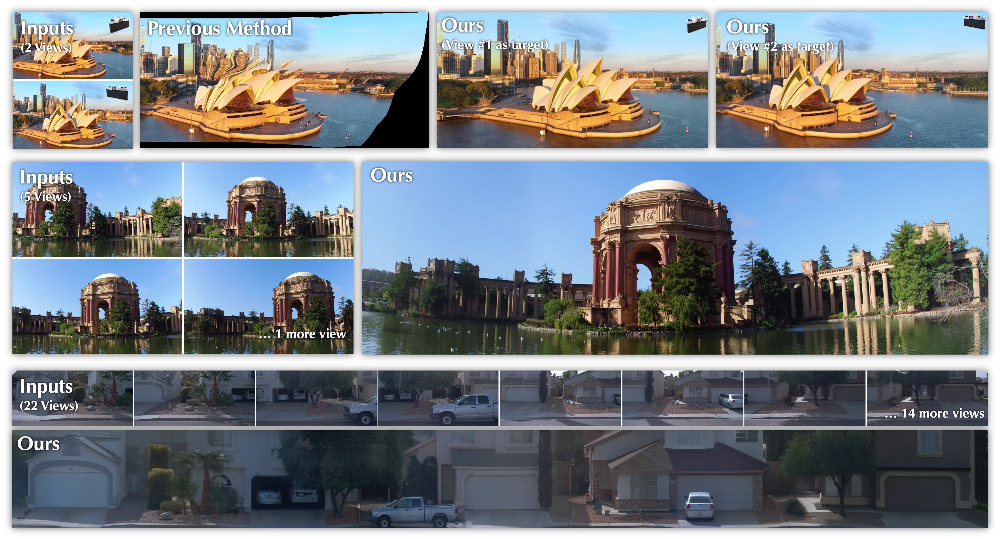
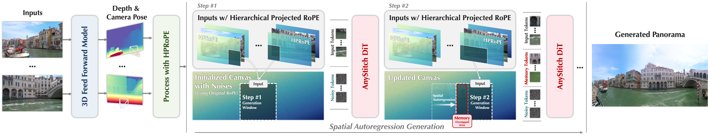

01
HPRoPE
Hierarchical Projected Rotary Positional Encoding unifies input tokens and the target canvas in 3D. Dense-depth heads capture detail; median-depth heads stay robust to noisy geometry.
Generative Large Parallax Image Stitching
AnyStitch turns casually captured views into coherent, high-resolution panoramas — even when large parallax makes traditional stitching break.

THE CORE IDEA

Hierarchical Projected Rotary Positional Encoding unifies input tokens and the target canvas in 3D. Dense-depth heads capture detail; median-depth heads stay robust to noisy geometry.
The panorama is generated patch by patch. Overlapped regions are carried forward as memory tokens, and relative RoPE keeps positions consistent across windows—supporting effectively unbounded generation.
CITATION
@article{anystitch2026,
title = {AnyStitch: Generative Large Parallax Image Stitching},
author = {Anonymous Authors},
journal = {ACM Transactions on Graphics},
year = {2026}
}